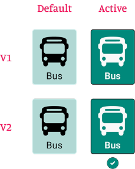

01Duidelijke selectie-status
Vroege iteraties vertrouwden vooral op kleur om de geselecteerde vervoerswijze aan te geven. Volgens WCAG-principes werd een extra vinkje toegevoegd als tweede visuele aanwijzing, zodat selectie-statussen ook voor gebruikers met kleurenblindheid begrijpelijk bleven.
